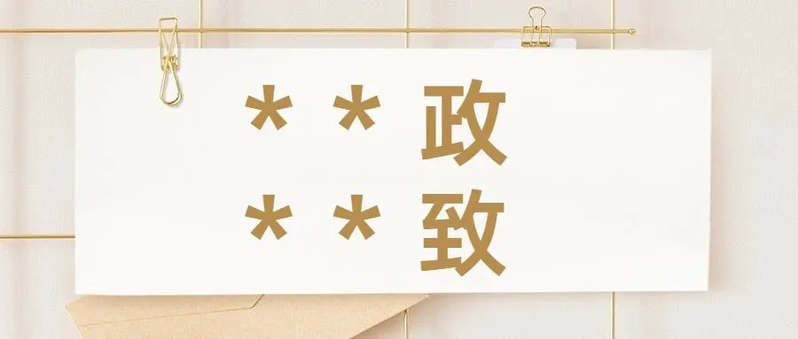

孖仔帮
公众号ID：twinsbang
关注
文|圆圈妈妈
网图|侵删
看到孕育群的孕妈们在讨论双胞胎的名字，又掀起了我的满屏回忆杀。
好像，当年给圆圈兄弟取名字时也是蛮伤神的，只怪当时自己的格局太小了，非要搞什么特殊性...
双胞胎嘛，名字当然要独特、好听，还必须得相关联且顺口的，因为得体现双胞胎特性和风格，让人一听到名字就马上GET 到：“哟，是双胞胎啊！”
好啦，经过三天三夜的苦思冥想，还真让我折腾出一组：“*政&*致”

然而，就是这两组形近字的名字太过相似，给我们的育儿生活带来诸多不便。
圆圈兄弟这对同卵双胞胎的相貌酷似本来已经够让人捉急了，这再来一对字形结构上高度相似的名字...
那真是，没事找事，净添乱！
有多乱？
请看往期推文《双胞胎的姓名有形近字会发生什么事》
2023年了，再次给新手爸妈提个醒，给双胞胎取名字一定三思而后行，千万不要有奇形怪状，脑洞大开的的想法。
双胞胎孩子就是两个独立的个体，在取名字上与普通的兄弟姐妹并无本质上的区别。
大名大气点，小名顺口点就好了，别整太复杂。
那么，问题来了，如何拒绝烂大街、土掉渣的双胞胎名字？
我知道大家都喜欢抄作业，那就来...抄吧!
以下资料来自双胞胎社群里各位妈妈们的分享，有些是在网上摘录整理，希望给新手双胞胎家长们来点取名字的灵感。
双胞胎男孩
金华 & 金山：取自“华山”
钧安 & 钧平：取自“平安”
铭怀 & 铭志：取自“怀志”
锐思 & 锐念：取自“思念”
金洪 & 金波：取自“洪波”
玉麒 & 玉麟：取自“麒麟”
玉龙 & 玉虎：取自“龙虎”
琸翔 & 琸宇：取自“翔宇”
益康 & 益健：取自“健康”
卓文 & 卓武：取自“文武”
锻钢 & 锻铁：取自“钢铁”
齐修 & 齐治：取自“修身治国”
琛宝 & 琛贝：取自“宝贝”
琛亮 & 琛明：取自“明亮”
锆明 & 锆亮：取自“明亮”
睿达 & 睿通：取自“通达”
睿诚 & 睿实：取自“诚实”
嘉禾 & 嘉木：取自“和睦”
瑞刚 & 瑞强：取自“刚强”
微澜 & 微波：取自“波澜”
善祥 & 善和：取自“祥和”
骏雄 & 骏伟：取自“雄伟”
常安 & 常平：取自“平安”
旭光 & 旭辉：取自“光辉”
舒飞 & 舒扬：取自“飞扬”
舒雅 & 舒量：取自“雅量”
伟志 & 伟向：取自“志向”
雅康 & 雅健：取自“健康”
森树 & 森林：取自“树林”
子胜 & 子利：取自“胜利”
世赞 & 世誉：取自“赞誉”
毅勇 & 毅武：取自“勇武”
文江 & 文山：取自“江山”
宇鹏 & 宇程：取自“鹏程”
龙凤胎
琪花 女孩名 、琪树 男孩名：取自”花树”
瑞雪 女孩名 、瑞冰 男孩名：取自“冰雪”
钟灵 女孩名 、钟毓 男孩名：取自”钟灵毓秀”
睿敏 女孩名 、睿聪 男孩名：取自”聪敏”
瓒文 女孩名 、瓒博 男孩名：取自”博文”
琸雅 女孩名 、琸量 男孩名：取自”雅量”
嘉音 女孩名 、嘉乐 男孩名：取自”音乐”
嘉凯 男孩名 、嘉旋 女孩名：取自”凯旋”
嘉文 女孩名 、嘉武 男孩名：取自”文武”
嘉宝 女孩名 、嘉贝 男孩名：取自”宝贝”
青波 女孩名 、青涛 男孩名：取自”波涛”
舒欢 女孩名 、舒畅 男孩名：取自”欢畅”
皓洁 女孩名 、皓白 男孩名：取自”洁白”
闳俊 男孩名 、闳丽 女孩名：取自”俊丽”
宏文 女孩名 、宏静 男孩名：取自”文静”
润晴 女孩名 、润朗 男孩名：取自”晴朗”
舒雅 女孩名 、舒致 男孩名：取自”雅致”
旭月 女孩名 、旭日 男孩名：取自”日月”
雅智 男孩名 、雅慧 女孩名：取自”智慧”
佳美 女孩名 、佳言 男孩名：取自”美言”
煜真 女孩名 、煜实 男孩名：取自”真实”
瑞珍 女孩名 、瑞宝 男孩名：取自”珍宝”
颀秀 女孩名 、颀伟 男孩名：取自”秀伟”
文聪 男孩名 、文慧 女孩名：取自”聪慧”
怀瑾 女孩名 、握瑜 男孩名：取自”怀瑾握瑜”
澧源 女孩名 、澧泉 男孩名：取自”源泉”
欣怡 女孩名 、欣然 男孩名：取自”怡然自得”
双胞胎女孩
铃语&铃音：取自”语音”
钟美&钟丽：取自”美丽”
瑞云&瑞彩：取自”云彩”
瑞灵&瑞芝：取自”灵芝”
瑞锦&瑞绣：取自”锦绣”
玲琳&玲琅：取自”琳琅”
锦凡&锦心：取自”凡心”
琇彩&琇云：取自”彩云”
琇芳&琇芬：取自”芬芳”
琛瑞&琛丽：取自”瑞丽”
雅秀&雅丽：取自”秀丽”
倩秀&倩美：取自”秀美”
芮安&芮静：取自”安静”
芮雅&芮优：取自”优雅”
芮欣&芮欢：取自”欢欣”
芮美&芮丽：取自”美丽”
芮波&芮澜：取自”波澜”
哲美&哲丽：取自”美丽”
琮丽&琮艳：取自”艳丽”
柔曼&柔妙：取自”曼妙”
柔绚&柔丽：取自”绚丽”
雅安&雅逸：取自”安逸”
娜晶&娜莹：取自”晶莹”
雅纯&雅洁：取自”纯洁”
美如&美意：取自”如意”
澜清&澜澈：取自”清澈”
琇晶&琇莹：取自”晶莹”
如雪&如冰：取自”冰雪”
愉涵&悦涵：取自“愉悦”
如心&如意：取自”称心如意“
汀嫣&汀雨：取自“烟雨霏霏”谐音
你家双胞胎的名字呢？
是烂大街、土掉渣？
还是超惊艳、接地气呢？
欢迎留言区分享，
让大家伙评评理吧！
-END-
微信公众号：孖仔帮
ID : twinsbang
专注双胞胎孕育，养育，教育经验分享
扫码关注我们
点一下你会更好看耶